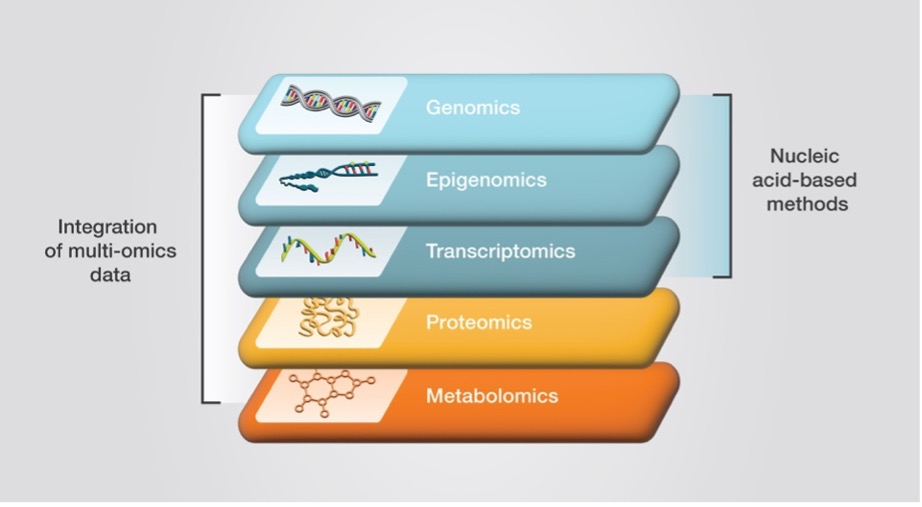

Preface
A gentle introduction to Omics
Omics technologies can be applied to a biological system of interest to obtain a snapshot of the underlying biology at a resolution that has never before been possible. These technologies provide a holistic yet detailed view of biological processes and interactions at a very large scale.

Many areas of research can be classified as omics. Examples include proteomics, transcriptomics, genomics, metabolomics and epigenomics, which correspond to global analyses of proteins, RNA, genes, metabolites, and methylated DNA or modified histone proteins.
Experiments involving Omics technologies usually require a specific set of skills to be analyzed which fall under the umbrella term of bioinformatics.
But why are we talking about high throughput data? 🤌🏼
As we will see, biological phenomena are extremely complex and hard to make sense of! Just think about the sheer size of the information (how much?) contained in our genome in the form of words composed by just 4 letters and the majority of them don’t even mean anything! 🤯
💡 Do you know what is the amount of information contained in the genome that is actually used to build proteins?
Later we will dive into the world of Next Generation Sequencing technologies (NGS) and how they have revolutionized the way we can collect information about the molecules around which life encodes and transfers its information, DNA, RNA and proteins.
Given the scale, size and complexity (hence high-throughput) of the data generated by these technologies, human power is not enough to get them processed in a reasonable amount of time… that’s where dumb computers come in the picture!
Bioinfowhattt?
Let’s look at what ChatGPT outputs when asked the question: “What do you think we mean when we say bioinformatics?”
When we say “bioinformatics,” we’re typically referring to the use of computer science, statistics, and data analysis techniques to understand complex biological data. This often involves analyzing genetic sequences (like DNA or RNA), protein structures, or other molecular biology data to make sense of biological systems, identify patterns, and answer questions related to health, disease, evolution, and more. It’s about bridging biology with technology to unlock insights from vast amounts of biological data.
But should we really trust it?
This course is aimed at giving you a sense of the possibilities and challenges that come with analyzing high-throughput data so that you can get a feeling for what your answer to that question might be!

Do I need to know how to program computers?
In short… YES! But don’t be intimated by this, we will walk through the computer code in the workshop together, trying to understand it by functionality instead of blindly learning to type some letters on a screen.
In particular, bioinformatics has historically revolved around the use of computer terminals (or command-line, CLI), using a terminal basically feels like looking inside the void soul of your computer, a spot of complete darkness, just like you imagine it.
☠️ If you dare, you can look into the void by typing ⌘+Space and typing “Terminal” on Mac or Win+R -> type “cmd” -> press Enter on Windows!
Most data-intensive operations in bioinformatics are handled by specialized “tools” (computer programs) that work in this environment, where we need to tell explicitly the computer what to do instead of pushing flashy buttons on the screen, something a bit different than what we are normally used to. This is because your computer’s Operating System is designed to make its use an actually enjoyable experience for you, but deep down everything ends in the void.

In this workshop we are not going to look at the computer’s terminal archaic way of communicating, we are instead going to instruct our computer on what we want to do by using a more modern and comprehensible language known as R.
What is R? 🤖
R is a programming language, what this means is that some people originally created it as a way for humans to write code that can be understood by a computer to perform simple or complex operations! Easy!
The main objectives of R as a language are to facilitate their users in performing tasks related to statistics and data analysis, including data visualization and representation.
💡 Have you ever heard of programming languages? Do you know any? Have you had any experience with
R?